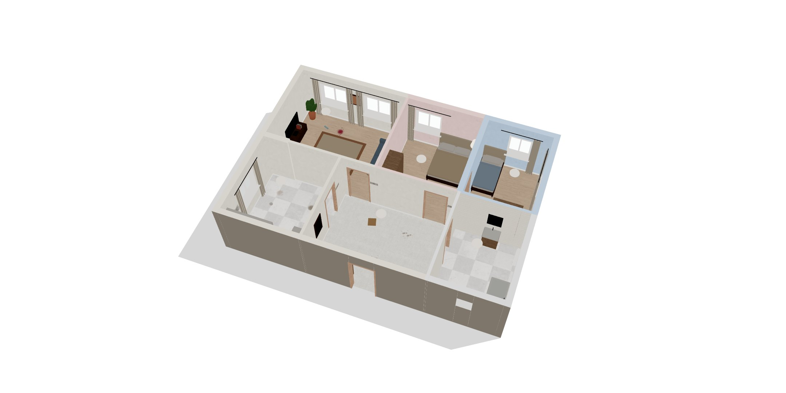
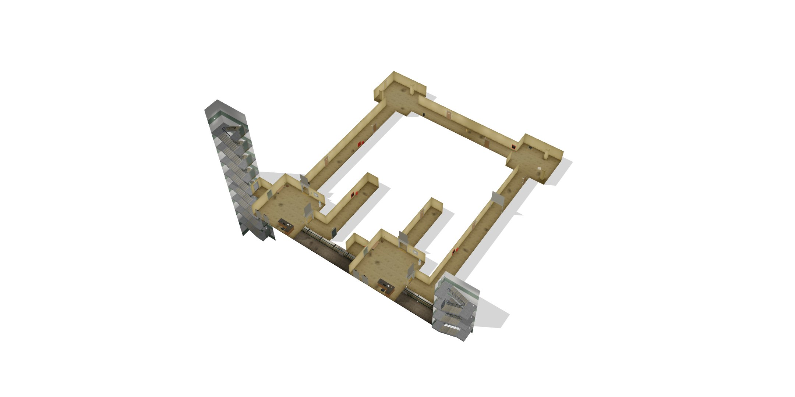
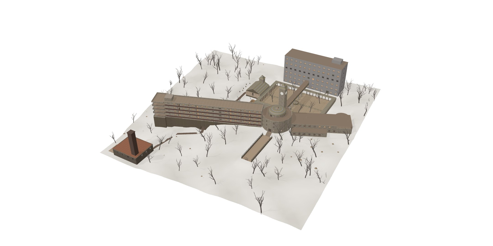
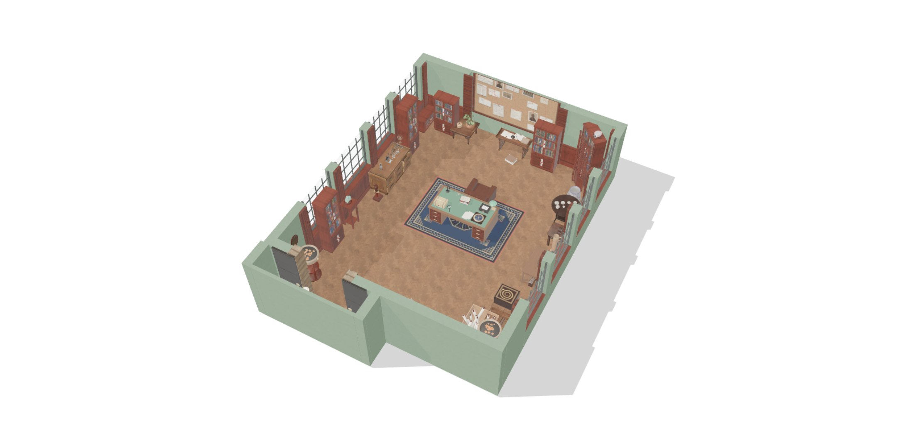
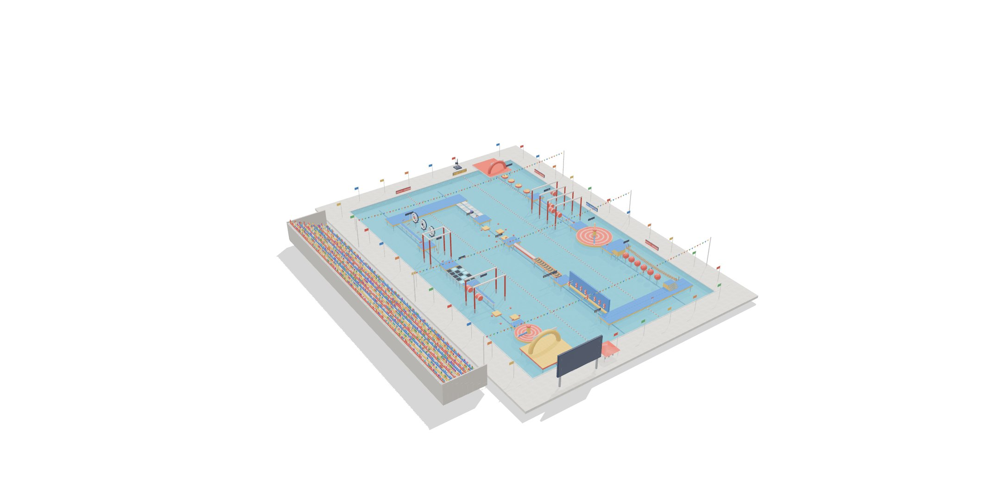

01231 failures局 · 41%
Spatial modelling空间建模
Declared impossible 133 · Ran out of steps 98宣称做不到 133 · 步数用完 98
Ordinary floor in the corridor: 40% → 80%回廊换成普通楼层：40% → 80%
An interactive benchmark for multimodal agents面向多模态智能体的交互式基准
Acting in a scene is not the same as understanding a world.能在场景里行动，不等于理解了这个世界。
People and AI agents explore 3D worlds that change as they move. Over tens to hundreds of steps, they have to build a picture of the space, keep it current, and act on it.人和 AI 智能体在会变化的 3D 世界里探索。几十到几百步的任务中，要建立对空间的认识，随时更新，并据此行动。
Overview概览
The agent sees first-person frames and text, and acts through the same interface in every world. The world state stays with the evaluator, whose task-specific checks decide success.智能体只看到第一人称画面和文字，在每个世界里都用同一套接口行动。世界状态只留给评测器，由各任务自己的判定决定是否成功。
demolish), and the next observation shows the change it made. Bottom right: the world state and episode logs are visible only to the evaluator, whose task-specific checks produce the score, progress and success, and apply the audit checks.上：五个世界及各自的第一人称画面。左下：旧宅翻新里的一局交互。智能体收到任务指令和第一人称观测后行动（这里是 demolish 拆除），下一帧观测里就能看到它造成的变化。右下：世界状态和对局日志只对评测器可见，由各任务自己的判定给出得分、完成度和是否成功，并执行审计检查。Environments环境
Each world adds a different kind of change the agent has to track. All five use the same observations and actions, and every task can also be played by a person in the browser.每个世界里，智能体要跟踪的变化各不相同。五个世界共用同一套观测和动作，每个任务也都可以由人在浏览器里玩。
World A · Renovation · the agent changes the layout世界 A · 旧宅翻新 · 智能体自己改变布局
A six-room flat and a client’s work order: clean, paint, install fixtures, take down a wall. Nothing on screen marks what is finished, so the agent has to remember, and after it removes a wall the routes it learned no longer hold.一套六室的旧房和一张客户工单：打扫、刷墙、安装、拆墙。画面上没有任何标记说明哪些已经完成，智能体只能自己记；拆掉一堵墙之后，它之前记住的路线也不再成立。

Reference runs (oracle), replayed in the browser scene. Select one to trace its path on the model above.参考解（oracle）在网页场景里的回放。选中一段，上方模型会画出它的路径。
Construction actions apply only to what lies under the crosshair within 1.5 m. The interface shows no progress bar and highlights nothing, so the agent has to track what is complete. Removing a wall changes the navigable layout; load-bearing walls are marked only on the client’s attached floor plan. In challenge mode and in evaluation, stains, trash, wall colours and the target paint colour are re-randomised every episode.施工动作只作用于准星正前方 1.5 米以内的物体。界面不显示进度条，也不做任何高亮，完成情况需要智能体自己跟踪。拆墙会改变可通行的布局；承重墙只在客户附带的平面图上标出。挑战模式和正式评测中，污渍、垃圾、墙面颜色和目标涂料颜色每局重新随机。
World B · Corridor · switches change what connects世界 B · 无尽回廊 · 开关改变连通关系
A basement floor whose ring corridor returns to the lift lobby after three right turns, and whose stairs lead down to B1 again. Breakers, fire shutters and one-way doors change which corridors connect.一层地下走廊：回字形走廊右转三次就回到电梯厅，往下走楼梯又回到 B1。配电箱、防火卷帘和单向门会改变走廊之间的连通。

Reference runs (oracle), replayed in the browser scene. Select one to trace its path on the model above.参考解（oracle）在网页场景里的回放。选中一段，上方模型会画出它的路径。
A basement floor whose layout cannot exist: the ring corridor returns to the lift lobby after three right turns, and each flight down the west stairs arrives at B1 again. A breaker panel powers at most two circuits, two fire shutters are interlocked and some doors open one way only; each of these changes which corridors connect. Some tasks provide a safety rope, chalk, or a camcorder with night vision and playback. Every task on the impossible floor has a control on an ordinary floor.一层在现实中不可能成立的地下楼层：回字形走廊右转三次回到电梯厅，沿西楼梯每往下走一层都回到 B1。配电箱最多同时接通两路，两道防火卷帘互锁，部分门只能单向通过，这些都会改变走廊之间的连通。部分任务提供安全绳、粉笔或带夜视与回放的摄像机。不可能楼层上的每个任务，都有一个正常楼层上的对照任务。
World C · Sanatorium · a pursuer follows known rules世界 C · 雾岭疗养院 · 追兵按公开规则行动
Four buildings on a hillside, from B1 to 6F. The night matron patrols, listens and checks hiding places by rules that are published; avoiding her depends on knowing how the building connects.山坡上四栋楼，从 B1 到 6F。夜班护士长按公开的规则巡房、听声、搜查藏身处；能不能避开她，取决于对楼内连通关系的了解。

Reference runs (oracle), replayed in the browser scene. Select one to trace its path on the model above.参考解（oracle）在网页场景里的回放。选中一段，上方模型会画出它的路径。
A tuberculosis sanatorium on a hillside: an old wing from 1934, a new wing from 1992, a rotunda, service buildings and a tunnel to the boiler house, from B1 to 6F. The night matron patrols, reacts to sound and sight, and searches hiding places. Her rules are published, so an agent can plan around her, provided it knows how the building connects.建在山坡上的肺结核疗养院：1934 年的老楼、1992 年的新楼、圆厅、服务楼，以及通往锅炉房的隧道，楼层从 B1 到 6F。夜班护士长会巡房，对声音和视线作出反应，并搜查藏身处。她的规则是公开的，智能体可以据此规划，前提是清楚楼内的连通关系。
World D · Missing detective · her left is not your left世界 D · 失踪的侦探 · 她的左手不是你的左手
A detective’s office crowded with books, scrolls and boxes. Her note is written from her chair, the next clue from the doorway, and every box and bookcase is sealed: open the wrong one and the episode is over.一间堆满书、卷轴和盒子的侦探事务所。她的便条按她坐在椅子上的视角写，下一条线索按你进门的视角写；每只盒子和每座书架都封了蜡，开错一处，这一局就结束。

Reference runs (oracle), replayed in the browser scene. Select one to trace its path on the model above.参考解（oracle）在网页场景里的回放。选中一段，上方模型会画出它的路径。
Ida, a detective, has not been seen for three days. Her office is crowded with books, scrolls, boxes and lamps, and she left a note for her assistant. The room is the case file: the note is written from her own chair, the card inside the box from the stone door, and every box and bookcase is sealed, so opening the wrong one tells whoever else is looking for her that someone has been in. The control task writes the note from your side as well; the gap between the two isolates perspective-taking. One densely furnished room tests switching frames of reference at close range, remembering a room in the dark, and remembering your own changes. In challenge mode and in evaluation the seed decides, every episode, which box and bookcase the note means, what was moved, where the documents and relics are, the order of the seals and whether each high case is locked, so an answer learnt once does not carry over.侦探伊妲已经三天没有露面。她的事务所里堆满了书、卷轴、盒子和灯具，桌上留着一张给助手的便条。整间屋子就是一份案卷：便条按她自己坐在椅子上的视角写，盒子里的卡片按你从石门进来的视角写；每只盒子和每座书架都封了蜡，开错一处，另一个在找她的人就会知道有人来过。对照任务把便条也改成你的视角，两者之间的差距就是换位思考这一项。这一个陈设密集的房间，考的是近距离的参照系切换、在黑暗里凭记忆找变化，以及记住自己动过什么。挑战模式和评测时，每一局都由种子重新决定便条指向哪只盒子和哪座书架、被动过的是哪几样、文件和器物在哪、封印的顺序以及展柜锁没锁，记住的答案用不上。
World E · Obstacle course · objects move on fixed cycles世界 E · 冲关 · 障碍按固定周期运动
Twelve sections of hammers, balls, rafts and ropes that move on fixed cycles. Each step returns four frames, from which the agent has to infer the motion and time its moves; a mistake drops it into the water.12 道关卡，摆锤、大红球、浮板和荡绳都按固定周期运动。每一步返回 4 帧画面，智能体要从中推断运动规律、算准时机；判断错了就会掉进水里。

Reference runs (oracle), replayed in the browser scene. Select one to trace its path on the model above.参考解（oracle）在网页场景里的回放。选中一段，上方模型会画出它的路径。
Twelve sections: hammers, a rotating sweeper, large balls, a punch wall, a reverse conveyor, moving rafts, fake tiles, crosswind, rope swings and a memory bridge. All motion is periodic and deterministic for a given seed, so every episode can be replayed exactly. Each section is scored separately.12 道关卡：摆锤、旋转扫杆、大球、拳击墙、逆向传送带、移动浮板、真假踏板、侧风、荡绳和记忆桥。所有运动都是周期性的，给定种子时完全确定，因此每一局都可以精确复现。每一关单独计分。
Leaderboard排行榜
Every model plays the same 59 tasks through the same agent harness, Codex CLI, with the same tools, prompt and private test seeds. Models are ranked by the share of tasks they complete.所有模型通过同一个智能体框架（Codex CLI）完成同样的 59 个任务，工具、提示词和私有测试种子完全相同，按完成任务的比例排名。
| # | Model模型 | Success rate成功率 | Progress完成度 | ARenovation翻新 | BCorridor回廊 | CSanatorium疗养院 | DDetective侦探 | ECourse冲关 |
|---|---|---|---|---|---|---|---|---|
| 1 | GPT-6 AstraOpenAI · xhigh | 70.2 | 20 | 96 | 28 | 27 | 86 | |
| 2 | Gemini 4 ArgonGoogle · high | 69.8 | 43 | 91 | 22 | 33 | 67 | |
| 3 | Claude Opus 5.5Anthropic · xhigh | 58.8 | 33 | 62 | 22 | 17 | 64 | |
| 4 | Muse Wonder 1.0Meta · max | 45.6 | 40 | 27 | 17 | 0 | 42 | |
| 5 | DeepSeek V4.1 Flash 1017DeepSeek · max | 35.2 | 0 | 27 | 25 | 0 | 17 | |
| 6 | Kimi K3.1 ProMoonshot AI · thinking | 39.3 | 10 | 13 | 25 | 0 | 17 | |
| 7 | Qwen 3.8 Max 0902Alibaba · max | 24.9 | 10 | 7 | 17 | 0 | 25 | |
| 8 | Doubao Seed 2.1 ProByteDance · max | 32.5 | 0 | 13 | 8 | 0 | 17 | |
| 9 | Grok 4.7xAI · xhigh | 28.9 | 10 | 13 | 8 | 0 | 8 |
Codex CLI 0.164.0; 9 models × 59 tasks; GPT-6 Astra, Gemini 4 Argon and Claude Opus 5.5 on 3 test seeds per task, the others on one (885 episodes). Success: the task's own checker marks it complete; an episode with an audit flag counts as a failure. Progress: the graded share of the task done, averaged over tasks. A–E: success rate (%) within each world: A Renovation (10 tasks), B Corridor (15 tasks), C Sanatorium (12 tasks), D Detective (10 tasks), E Course (12 tasks). Ties are broken by progress; the reasoning setting follows each model's maker.Codex CLI 0.164.0；9 个模型 × 59 个任务；GPT-6 Astra、Gemini 4 Argon 和 Claude Opus 5.5 每个任务 3 个测试种子，其余模型每个任务一个，共 885 局。成功：由任务自身的判定器判为完成；带审计标记的局按失败计。完成度：按评分标准计算的任务完成比例，按任务平均。A–E：各世界内的成功率（%）：A 翻新 10 个，B 回廊 15 个，C 疗养院 12 个，D 侦探 10 个，E 冲关 12 个。成功率相同时按完成度排序；厂商后面是推理设置。
Diagnosis诊断
568 of the 885 episodes fail. Each failure is put under one of four capabilities by how the episode ended.885 局里有 568 局失败，按每局的结局归入四项能力。
Declared impossible 133 · Ran out of steps 98宣称做不到 133 · 步数用完 98
Ordinary floor in the corridor: 40% → 80%回廊换成普通楼层：40% → 80%
Announced done, but was not 99宣称完成但没做完 99
Progress shown: 1/15 → 9/15 · wall already down: 2/15 → 9/15显示进度 1/15 → 9/15 · 墙已拆好 2/15 → 9/15
Caught by the pursuer 89被追兵抓住 89
The top three are caught 13–21 times each排名前三的模型也各被抓 13–21 局
Kept falling (obstacle course) 85冲关反复落水 85
Course success across models: 8%–86%各模型冲关成功率 8%–86%
The other 64 failures are not put under a capability: broke a task rule (24), audit flag or stopped early (40).另有 64 局失败不归入单一能力：违反任务规则 24 局、审计标记或中途停止 40 局。
59 episodes per model, 177 for GPT-6 Astra, Gemini 4 Argon and Claude Opus 5.5; each failure counts once.每个模型 59 局，GPT-6 Astra、Gemini 4 Argon 和 Claude Opus 5.5 各 177 局，每局失败只记一个原因。
Each control removes one difficulty from its task. Sorted by the gain.对照任务只去掉一个难点，按成功率的提升排序。
task原任务control对照
Each side is 15 episodes, one per model and test seed; only gaps of 5 or more are in full colour. Corridor controls use an ordinary floor. Sorting failures by their ending is an approximation: running out of steps, for one, can also come from poor planning.每边 15 局（每个模型每个测试种子一局），相差 5 局及以上才用实色标出。回廊的对照都是普通楼层。按结局归类是近似，比如步数用完也可能源于规划。
Not in the standard condition, where they receive first-person frames and text only. The map is given only in the diagnostic condition that provides it. The god-view maps on this page are for readers.标准条件下不能，只有第一人称画面和文字；只有诊断实验中专门提供地图的条件才会给。本页的上帝视角图是给读者看的。
Yes. WebEnv drives the same web page through headless Chrome. Adding ?ai=1 to a scene URL lets a person play with the model’s actions and observations.是的。WebEnv 通过无头 Chrome 驱动的就是同一个网页。在场景网址后加 ?ai=1，人就可以用模型的动作和观测来玩。
The same task with one difficulty removed: an ordinary floor instead of the impossible one, a hint overlay, a door sign instead of “the room next to the bathroom”, marked installation points, a wall that is already down, or a note written from your side instead of hers. The gap between a task and its control isolates the skill being tested.去掉一个难点的同一个任务：用正常楼层代替不可能的楼层、加上提示、用门牌代替「卫生间隔壁那间」、标好安装位置、墙已经拆好，或者便条改成按你的视角写。任务和对照之间的差距，隔离出被测的那项能力。
Hints are removed and the world varies between episodes: fan settings and timings on the obstacle course; stains, trash and colours in the flat; in the office, which box the note means, what was moved and whether the high case is locked. The god view opens only after the episode ends.去掉提示，每一局的世界都有变化：冲关的风机和节奏会变，旧房的污渍、垃圾和颜色会变，事务所里便条指向的盒子、被动过的东西和展柜锁没锁会变。上帝视角要到这一局结束后才能打开。
Each world scores what its tasks are about. The obstacle course scores every section separately (passed, steps, time, falls) and averages them. The renovation scores each work-order item, counts violations such as demolishing a load-bearing wall, and flags stopping before the work is finished. Corridor tasks that cannot be done are scored on the reason the agent gives.每个世界按任务的重点计分。冲关逐关单独计分（是否通过、步数、用时、落水次数）后取平均；旧宅翻新逐项给工单计分，记录拆承重墙之类的违规，并标记工作未完成就停下的情况；回廊里无法完成的任务，按智能体给出的理由计分。
No. The browser scenes render with SwiftShader in headless Chrome. The optional photoreal frames for the renovation come from Blender Cycles, at about 3 seconds per frame on 64 CPU cores.不需要。网页场景在无头 Chrome 里用 SwiftShader 软件渲染。旧宅翻新可选的写实画面来自 Blender Cycles，在 64 核 CPU 上约 3 秒一帧。
Not yet. Signs, task cards and text observations are in Chinese; this page is the English overview.这个页面有英文版，右上角可以切换。场景里的路牌、任务卡和文字观测目前是中文。
SpaceAct, our earlier benchmark, used 108 LEGO and mechanical-puzzle tasks to show that answering questions about a 3D scene is not the same as acting in one. Space Track keeps the closed loop and moves it into walkable worlds that change while the agent acts, with tasks of tens to hundreds of steps.我们之前的基准 SpaceAct 用 108 个乐高和机械谜题任务说明：回答关于 3D 场景的问题，不等于能在其中行动。Space Track 保留闭环，把它放进可以行走、并在智能体行动时不断变化的世界，任务长度为几十到几百步。
Click anywhere or press Esc to close点击任意处或按 Esc 关闭